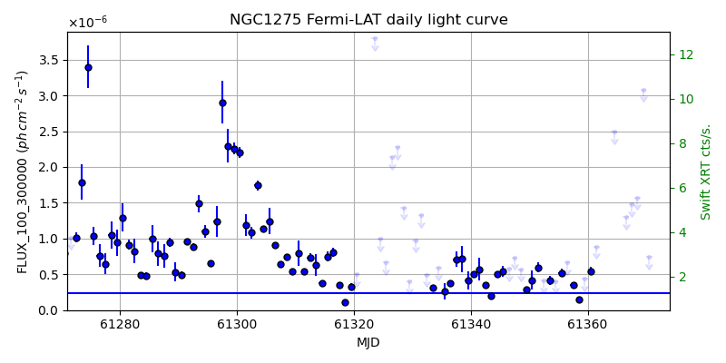
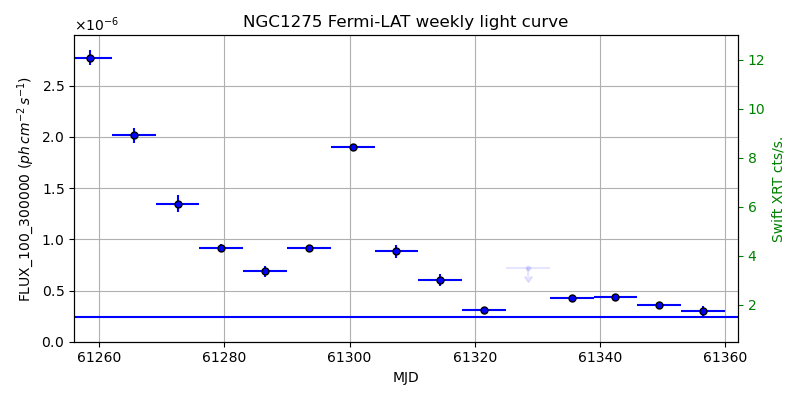

LAT Lightcurve site: https://fermi.gsfc.nasa.gov/ssc/data/access/lat/msl_lc/source/NGC_1275
Swift site: https://www.swift.psu.edu/monitoring/source.php?source=3C84
NED: Query
Time of last update of this page: UT: 2026-11-28 16:13 (MJD: 61372.676)
| Property | Value |
|---|---|
| R.A. | 3:19:48.24 |
| Dec. | 41:30:43.2 |
| z | 0.018 |
| 3FGL SpectrumType | LogParabola |
| 3FGL PL Index | |
| 3FGL Flux_100_300000 | 2.38e-07 1 / (s cm2) |
| 3FGL Flux_1000_300000 | 2.34e-08 1 / (s cm2) |
| 3FGL Flux >200 GeV | 3.81e-11 1 / (s cm2) |
| 3FGL Extrap. Crab >200 GeV | 0.16 |
| 3FGL Flux After EBL Absorption >200GeV | 3.56e-11 1 / (s cm2) |
| 3FGL EBL Crab Fraction >200GeV | 0.15 |

| MJD | dMJD | Flux | dFlux | Frac3FGL | FracCrab>200GeV | EBLFracCrab>200GeV |
|---|---|---|---|---|---|---|
| 61367.50 | 0.50 | 1.48e-06 | 0.00e+00 | 0.00 | 0.00 | 0.00 |
| 61368.50 | 0.50 | 1.57e-06 | 0.00e+00 | 0.00 | 0.00 | 0.00 |
| 61369.50 | 0.50 | 3.08e-06 | 0.00e+00 | 0.00 | 0.00 | 0.00 |
| 61370.50 | 0.50 | 7.41e-07 | 0.00e+00 | 0.00 | 0.00 | 0.00 |
| 61371.50 | 0.50 | 4.26e-06 | 0.00e+00 | 0.00 | 0.00 | 0.00 |

| MJD | dMJD | Flux | dFlux | Frac3FGL | FracCrab>200GeV | EBLFracCrab>200GeV |
|---|---|---|---|---|---|---|
| 61335.50 | 3.50 | 4.23e-07 | 2.19e-08 | 1.78 | 0.29 | 0.27 |
| 61342.50 | 3.50 | 4.37e-07 | 2.62e-08 | 1.84 | 0.30 | 0.28 |
| 61349.50 | 3.50 | 3.61e-07 | 2.05e-08 | 1.52 | 0.25 | 0.23 |
| 61356.50 | 3.50 | 3.01e-07 | 5.05e-08 | 1.26 | 0.20 | 0.19 |
| 61363.50 | 3.50 | 5.53e-07 | 5.22e-08 | 2.33 | 0.38 | 0.36 |
| MJD | dMJD | Flux | dFlux | Frac3FGL | FracCrab>200GeV | EBLFracCrab>200GeV |
|---|---|---|---|---|---|---|
| 61367.50 | 0.50 | 1.42e-07 | 0.00e+00 | 0.00 | 0.00 | 0.00 |
| 61368.50 | 0.50 | 2.47e-07 | 0.00e+00 | 0.00 | 0.00 | 0.00 |
| 61369.50 | 0.50 | 3.58e-07 | 0.00e+00 | 0.00 | 0.00 | 0.00 |
| 61370.50 | 0.50 | 1.51e-07 | 0.00e+00 | 0.00 | 0.00 | 0.00 |
| 61371.50 | 0.50 | 1.94e-07 | 0.00e+00 | 0.00 | 0.00 | 0.00 |

| MJD | dMJD | Flux | dFlux | Frac3FGL | FracCrab>200GeV | EBLFracCrab>200GeV |
|---|---|---|---|---|---|---|
| 61335.50 | 3.50 | 3.46e-08 | 6.47e-09 | 1.48 | 0.24 | 0.22 |
| 61342.50 | 3.50 | 4.72e-08 | 6.67e-09 | 2.02 | 0.33 | 0.31 |
| 61349.50 | 3.50 | 3.77e-08 | 8.15e-09 | 1.61 | 0.26 | 0.24 |
| 61356.50 | 3.50 | 2.67e-08 | 6.53e-09 | 1.14 | 0.18 | 0.17 |
| 61363.50 | 3.50 | 3.20e-08 | 0.00e+00 | 0.00 | 0.00 | 0.00 |
--------------------------------------------------------- Using user-supplied coords: 3:19:48.24 41:30:43.2 2000 --------------------------------------------------------- FLWO UT night of: 2026-11-29 Local Sid. @ Midnight: 04:08 Sunset (-15.0) (local, UT): 18:31 01:31 Sunrise (-15.0) (local, UT): 05:53 12:53 Moonrise (local, UT): 21:57 04:57 Moonset (local, UT): Moon phase: 0.72 --------------------------------------------------------- AzTime LSID UT Obj_el Obj_az Mn_el Mn_az Sep. --------------------------------------------------------- 18:31 22:39 01:31 34.1 58.4 -32.9 32.1 71.4 19:01 23:09 02:01 39.6 59.8 -29.4 38.9 71.7 19:31 23:39 02:31 45.2 60.9 -25.4 45.0 72.1 20:01 00:09 03:01 50.8 61.4 -21.0 50.6 72.4 20:31 00:39 03:31 56.4 61.2 -16.2 55.6 72.7 21:01 01:09 04:01 62.0 59.9 -11.1 60.2 73.0 21:31 01:39 04:31 67.4 56.8 -5.4 64.5 73.3 22:01 02:09 05:01 72.6 50.2 0.4 68.5 73.6 22:31 02:39 05:31 77.0 37.0 5.8 72.2 73.9 23:01 03:10 06:01 79.8 12.3 11.6 75.8 74.1 23:31 03:40 06:31 79.4 340.9 17.5 79.4 74.4 00:01 04:10 07:01 76.1 319.1 23.6 82.9 74.6 00:31 04:40 07:31 71.4 307.8 29.7 86.5 74.9 01:01 05:10 08:01 66.2 302.3 35.8 90.3 75.1 01:31 05:40 08:31 60.7 299.7 42.0 94.4 75.3 02:01 06:10 09:01 55.1 298.6 48.1 99.1 75.5 02:31 06:40 09:31 49.5 298.6 54.2 104.7 75.7 03:01 07:10 10:01 43.9 299.3 60.1 111.7 75.9 03:31 07:40 10:31 38.3 300.5 65.6 121.1 76.1 04:01 08:10 11:01 32.8 302.0 70.5 134.7 76.3 04:31 08:40 11:31 27.5 304.0 74.0 154.7 76.5 05:01 09:11 12:01 22.3 306.2 75.2 181.1 76.7 05:31 09:41 12:31 17.2 308.8 73.6 206.8 76.9 05:53 10:02 12:53 13.6 310.8 71.0 221.2 77.1 --------------------------------------------------------- Dark hours >55 deg.: 1.55 srcstart (UT): 2026-11-29 03:23 srcend (UT): 2026-11-29 04:57